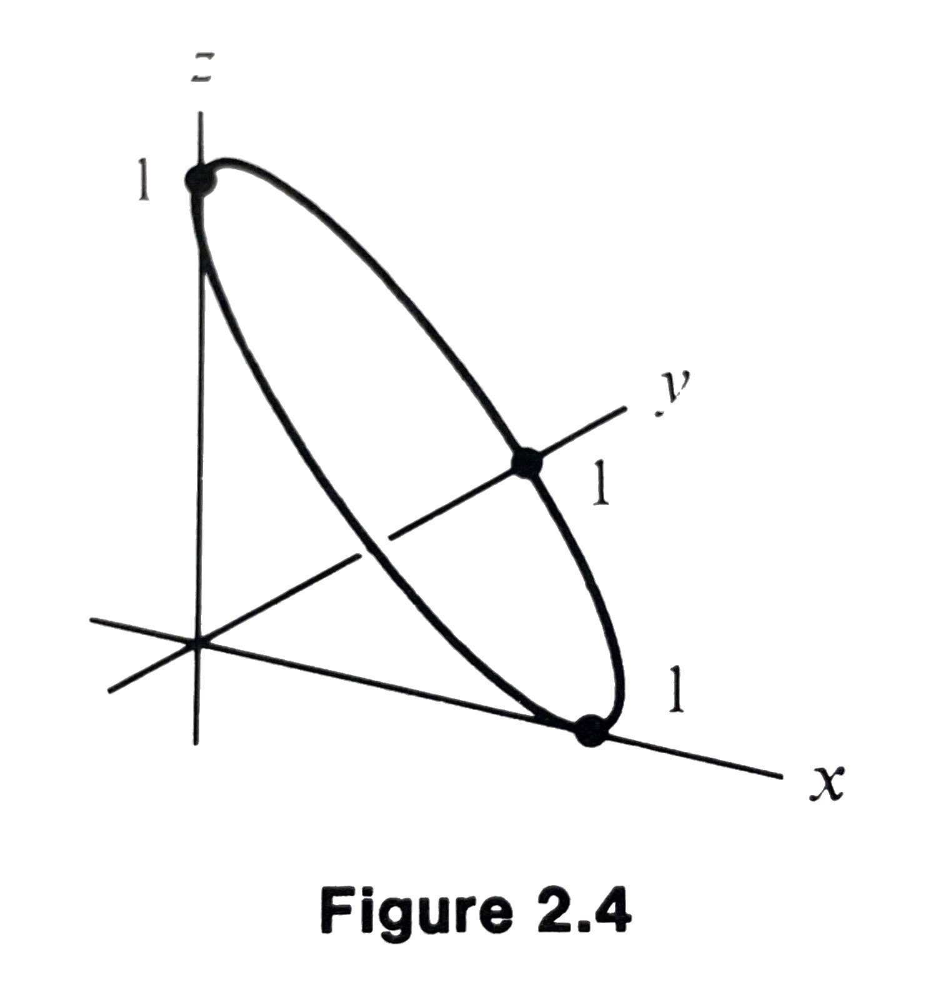

MATH 4100 - Vector Analysis
Jie Zhong
Department of Mathematics
California State University, Los Angeles
Chapter 2 Vector Functions of a Single Variable
2.1 Differentiation
Definition
A vector-valued function \(\mathbf{F}\) of a single variable is a rule that associate a vector \(\mathbf{F}(t)\) to each real number \(t\) in some set, usually an interval \(t \in [t_1, t_2]\) or a collection of intervals:
Example:
\(\mathbf{F}(t) = (1/t) \mathbf{i}\) defined for \(t \neq 0\).
Limits
We say that a vector-valued function \(\mathbf{F}\) has a limit \(\mathbf{A}\) at \(t_0\) and write
if the real-valued function \(f(t) = |\mathbf{F}(t) - \mathbf{A}|\) has a limit \(0\) at \(t_0\), i.e.,
which means that for any \(\varepsilon >0\), there is \(\delta >0\) such that
Limits - Continued
Intuitively, this means that the magnitude and the direction of the vector \(\mathbf{F}(t)\) approaches the magnitude and direction of the vector \(\mathbf{A}\).
Consequently, this also means that the components of the vector \(\mathbf{F}(t)\) approach the components of the vector \(\mathbf{A}\), i.e.,
where \(\mathbf{F}^1 = P, \mathbf{F}^2 = Q, \mathbf{F}^3 = R\), and \(\mathbf{A}^i = A_i\).
Continuity
We say that a vector-valued function \(\mathbf{F}\) is continuous at \(t_0\) if
This means that the components and the magnitude of the vector \(\mathbf{F}(t)\) are continuous at \(t_0\), i.e.,
Derivatives
We say that a vector-valued function \(\mathbf{F}\) is differentiable at \(t_0\) if the limit
exists; this limit is then called the derivative of \(\mathbf{F}(t)\) at \(t_0\) and is written as
Properties of derivatives
Proof of Eq. \eqref{eq:2.7}:
With the definition of the derivative in mind, we write
As \(\Delta t \to 0\), the right-hand side approaches a limiting value given by
and the limit of the left-hand side is nothing but
Differentiation By Components
From the definition and properties of derivatives, vector differentiation is like scalar differentiation, treating \(\mathbf{i}, \mathbf{j}\) and \(\mathbf{k}\) as constants. If
then
Examples
Find the derivative of the following vector-valued functions.
- \(\mathbf{F}(t) = t^3 \mathbf{j} - \mathbf{k}\).
- \(\mathbf{F}(t) = \sin t \mathbf{i} + \cos t \mathbf{j} + t \mathbf{k}\).
- \(\mathbf{F}(t) = \mathbf{i} + 2 \mathbf{j} - \mathbf{k}\).
Example 2.7
Prove that, if \(\mathbf{F}(t)\) has constant nonzero magnitude (varies only in direction), then \(\mathbf{F}'(t)\) is either the zero vector or it is a nonzero vector perpendicular to \(\mathbf{F}(t)\).
Proof
If \(|\mathbf{F}(t)|\) is a constant, then \(\mathbf{F} \cdot \mathbf{F}\) is also a constant.
Thus, the derivative of \(\mathbf{F} \cdot \mathbf{F}\) should be zero.
But using Eq. \eqref{eq:2.6}, we have
Therefore, we have \(\displaystyle \mathbf{F} \cdot \frac{d \mathbf{F}}{dt} = 0\).
2.2 Space Curve, Velocities, and Tangents
Space Curves
Recall that we represent a line in vector form:
In this section, we consider parametric equations of the form
where \(\mathbf{R}(t)\) is a (continuous) vector-valued function called a space curve or an arc.
Note: Different functions may parameterize the same curve. For example,
Circle
Parametric equation of the circle \(x^2 + y^2 = 1\) in the \(z = 0\) plane:
Circle - Continued
Parametric equation of the circle centered at \(\mathbf{R}_0 = x_0 \mathbf{i} + y_0 \mathbf{j} + z_0 \mathbf{k}\), with radius \(\rho\), lying in the plane \(z = z_0\):
or simply,
Circle - Continued
Parametric equation of the circle centered at \(\mathbf{R}_0\) with radius \(\rho\) lying in the plane spanned by the orthonormal vectors \((\mathbf{e}_1, \mathbf{e}_2)\):
Example 2.8
Parametrize the circle of radius \(2\), parallel to the \(xz\) plane, centered at \((0, 1, 0)\).
Solution
We use \(\mathbf{R}_0 = \mathbf{j}, \mathbf{e}_1 = \mathbf{i}\) and \(\mathbf{e}_2 = \mathbf{k}\) in Eq. \eqref{eq:2.13} to derive
Example 2.9
Parametrize the circle cutting the axes at the points \(x=1, y=1\), and \(z=1\) respectively.

Example 2.9 - Continued
Solution
The circle should lie in the plane \(x + y + z = 1\).
The midpoint of the equilateral triangle formed by \(\mathbf{i}, \mathbf{j}\) and \(\mathbf{k}\) is the center of the circle, which is given by
The radius of the circle is the distance from the midpoint to, say, \(\mathbf{i}\):
Example 2.9 - Continued
Two orthonormal vectors on the plane:
By Eq. \eqref{eq:2.13}, we have
Helix
Let \((\mathbf{e}_1, \mathbf{e}_2, \mathbf{e}_3)\) be a right-handed orthonormal system. The helix of radius \(\rho\) and pitch \(2 \pi |a|\) with axis passing through \(\mathbf{R}_0\) and parallel to \(\mathbf{e}_3\) is described by
The helix is right-handed for \(a > 0\) and left-handed for \(a<0\).
Example 2.10
Describe the helix generated by \(x = \cos t, y = 2t, z = \sin t\).
Solution
This has the form of Eq. \eqref{eq:2.15}, with \(\mathbf{R}_0 = \mathbf{0}\), radius \(\rho = 1\), \(\mathbf{e}_1 = \mathbf{i}\), and \(\mathbf{e}_2 = \mathbf{k}\).
Note: \(\mathbf{i}, \mathbf{j}, \mathbf{k}\) is not a right-handed system, so we must take \(\mathbf{e}_3 = - \mathbf{j}\).
The parametric equation of the helix is
This helix is left-handed and has pitch \(4 \pi\).
Example 2.11
Describe the helix of Example 2.10 using nonparametric equations.
Solution
Recall that
We can eliminate \(t\) in favor of \(y\) using \(t = y/2\). This results in
as a nonparametric form.
Velocity
If the space curve \(\mathbf{R}(t)\) is differentiable, the (instantaneous) velocity \(\mathbf{v}\) is defined as the derivative of \(\mathbf{R}(t)\), i.e.
The magnitude \(|\mathbf{v}|\) of \(\mathbf{v}\) is called the speed, denoted by \(\nu\).
Velocity - Continued
Note: The velocity vector \(\mathbf{v} = d \mathbf{R}/ dt\) is tangent to the curve.
We use the letter \(\mathbf{T}\) to denote the unit tangent vector:
Example 2.12
Determine the unit vector tangent to the circle \(x = \cos t, y = \sin t, z = 0\) at (a) \(t = 0\); (b) \(t = \pi/2\).
Solution From Fig. 2.8, it is obvious that (a) \(\mathbf{j}\), (b) \(-\mathbf{i}\).
Example 2.12 - Continued
We can also see this by Eq. \eqref{eq:2.19}:
For (a), \(t = 0\), we have
For (b), \(t = \pi/2\), we have
Example 2.13
Find the unit vector tangent to the curve \(x = t, y = t^2, z = t^3\), at the point \((2, 4, 8)\).
Solution
The unit tangent vector is
The point \((2, 4, 8)\) corresponds to \(t = 2\), so we have
Nomenclature to Describe Curves
- A curve is smooth if there is parametrization \(\mathbf{R}(t), t \in [t_1, t_2]\), satisfying
- the velocity is continuous;
- there are no self-crossings;
- the velocity is non-zero.
- A curve is a closed loop if \(\mathbf{R}(t_1) = \mathbf{R}(t_2)\).
- A curve is regular if it consists of a finite number of smooth arcs joined together without self-crossings.
- A curve is oriented if a direction is specified along it, usually described by the direction of increasing parameter.
Nomenclature to Describe Curves - Continued
Arc length
Suppose \(C\) is a smooth space curve, which is parametrized by \(\mathbf{R}(t)\), for, say \(a \le t \le b\). The length of the smooth curve is given by
Arc length - Continued
The expression of the arc length is sometimes written as
which emphasizes that the arc length is independent of a particular parametrization.
Example 2.14
Find the arc length between \((0, 0, 1)\) and \((1, 0, 1)\) of the helix \(y = \sin (2\pi x), z = \cos (2 \pi x)\).
Solution
First, note that if we set \(x = t / (2\pi)\), we can parametrized the helix as in Eq. \eqref{eq:2.15}.
Since here \(y\) and \(z\) are functions of \(x\), we can re-write
Thus, the arc length desired is
Natural parametrization
We can use the arc length as a parameter of a space curve:
This suggests the possibility of using \(s\) itself as the parameter. In principle, at least, we may invert the above equation to get \(t\) in terms of \(s\); substituting into the function \(\mathbf{R}(t)\) given \(\mathbf{R}\) as a function of \(t\).
However, in practice, the direct computation of \(\mathbf{R}(s)\) is not easy.
Example 2.15
Reparametrize the curve (i) \(\displaystyle \mathbf{R}(t) = \frac{t^2}{2}\mathbf{i} + \frac{t^3}{3} \mathbf{k}, (0 \le t \le 2)\) in terms of arc length.
Solution
Choosing \(t_1 = 0\), we have
Solving the equation for \(t\), and we \(t = [(3s + 1)^{2/3} - 1]^{1/2}\).
The new parametrization is
Natural parametrization - Continued
Question: Why bother?
By the fundamental theorem of calculus, we have
which identifies the speed with the rate of change of arc length, a reassuring fact.
In component form, this becomes
Natural parametrization - Continued
Since the curve is smooth, the velocity is not zero, i.e, \(ds/dt \neq 0\), by the chain rule,
Note:
- \(d \mathbf{R}/ds\) is tangent to the curve, since \(d \mathbf{R}/dt\) (or the velocity) is.
- Moreover, \(d \mathbf{R}/ds\) is a unit tangent vector, so
Example 2.15 - Revisit
Reparametrize the curve (i) \(\displaystyle \mathbf{R}(t) = \frac{t^2}{2}\mathbf{i} + \frac{t^3}{3} \mathbf{k}, (0 \le t \le 2)\) in terms of arc length.
The new parametrization is
Furthermore, we can compute
which is a unit tangent vector to the curve.
2.3 Acceleration and Curvature
Acceleration
The acceleration \(\mathbf{a}\) of a particle is defined to be the time rate of change of its velocity.
Acceleration is associated with a change in either the magnitude or the direction of the velocity, or both.
Change of Speed Only
First, we suppose that the particle moves along a straight line, i.e., the direction of the velocity is constant. In this case, the magnitude of the acceleration is just the rate of change of speed:
where \(s\) is the arc length along the curve.
Change of Direction Only
On the other hand, let’s assume the particle moves at constant speed around a circle of radius \(\rho\), it is well known that it undergoes a “centripetal” acceleration of magnitude
directed toward the center of the circle. This is due solely to the change of direction.
Acceleration - Continued
In general, the acceleration vector can be expressed as the linear combination of two orthonormal vectors, one giving the rate of change of speed and the other giving the instantaneous centripetal acceleration corresponding to a related circular trajectory:
where \(\mathbf{T}\) is the unit tangent vector, and
Curvature
We define the curvature \(\kappa\) as the rate at which the unit tangent vector turns, with respect to arc length along the curve:
We can also write
Question: What does this give for the curvature of a circle of radius \(\rho\)?
Curvature of Circles

In Fig. 2.16, the arc length between \(P_1\) and \(P_2\) on the circle is
The change of magnitude of the unit tangent vector is
Thus, \(\displaystyle \left| \frac{\Delta \mathbf{T}}{\Delta s}\right| \approx \frac{\Delta \theta}{\Delta s} = \frac{1}{\rho}\).
The curvature of a circle as we have defined it is the reciprocal of its radius:
Normals
Note: \(d \mathbf{T}/dt = \mathbf{0}\) or \(d \mathbf{T}/dt \perp \mathbf{T}\) since \(|\mathbf{T}| = 1\) (see Example 2.7).
If \(d \mathbf{T}/dt \neq \mathbf{0}\), we define the unit vector
to be the principal normal.
In natural parametrization, we have \(\displaystyle \mathbf{N} = \frac{d \mathbf{T}/ ds}{|d \mathbf{T}/ ds |}\).
Thus, \(\displaystyle \frac{d \mathbf{T}}{ds} = \kappa \mathbf{N}\).
In other words, \(\mathbf{T}\) turns in the direction \(\mathbf{N}\), at a rate \(\kappa\) (with respect to arc length).
Orthonormal Decomposition of Acceleration
which gives us the Eq. \eqref{eq:2.30}.
The last equality uses the fact that
Also, we by the pythagorean theorem,
Example 2.16
The position of a particle moving around the circle \(x^2 + y^2 = r^2\) in the \(xy\) plane, with angular velocity \(\omega\), is
Find the normal and tangential components of acceleration of the particle, and determine the curvature of the circle.
Example 2.16 - Continued
Solution
- \(\mathbf{R}(t) = r \cos (\omega t) \mathbf{i} + r \sin (\omega t) \mathbf{j}\).
- \(d \mathbf{R}/ dt = - r \omega \sin(\omega t) \mathbf{i} + r \omega \cos(\omega t) \mathbf{j}\).
- \(d^2 \mathbf{R}/dt^2 = - r \omega^2 \cos(\omega t) \mathbf{i} - r \omega^2 \sin(\omega t) \mathbf{j}\).
- \(\nu = |d \mathbf{R}/dt| = (r^2 \omega^2 \sin^2(\omega t) + r^2 \omega^2 \cos^2(\omega t))^{1/2} = \omega r\).
- \(a_t = d\nu/ dt = 0\).
- \(|\mathbf{a}| = |d^2 \mathbf{R}/dt^2| = \omega^2 r\).
- \(|\mathbf{a}| = (a_t^2 + a_n^2)^{1/2} = a_n = \kappa \nu^2\).
- \(a_n = \omega^2 r\), and \(\kappa = a_n/ \nu^2 = \omega^2 r / \omega^2 r^2 = 1 /r\).
Example 2.17
The coordinate of a particle at time \(t\) are
Find the speed, the normal and tangential components of acceleration, and the curvature of the path, in terms of \(t\).
Example 2.17 - Continued
Solution
- \(\mathbf{R}(t) = (\sin t - t \cos t) \mathbf{i} + (\cos t + t \sin t) \mathbf{j} + t^2 \mathbf{k}\).
- \(d \mathbf{R}/ dt = (t \sin t) \mathbf{i} + (t \cos t) \mathbf{j} + 2t \mathbf{k}\).
- \(d^2 \mathbf{R}/dt^2 = (t \cos t + \sin t) \mathbf{i} + (- t \sin t + \cos t) \mathbf{j} + 2 \mathbf{k}\).
- \(\nu = |d \mathbf{R}/dt| = (t^2 \sin^2 t + t^2 \cos^2 t + 4t^2)^{1/2} = \sqrt{5}t\).
- \(a_t = d\nu/ dt = \sqrt{5}\).
By the Eq. \eqref{eq:2.42},
\begin{align*} a_n & = (|\mathbf{a}|^2 - a_t^2)^{1/2}\\ & = [(t \cos t + \sin t)^2 + (-t \sin t + \cos t)^2 + 2^2 - 5]^{1/2} = t. \end{align*}- \(\kappa = a_n/ \nu^2 = t / (5t^2) = 1 /(5t)\).
Another Formula to Compute the Curvature
First of all,
Note that \(\mathbf{T}\) and \(\mathbf{N}\) are perpendicular to each other and they are unit vectors, so
Binormal Vector and Torsion
We call the unit vector \(\mathbf{B} = \mathbf{T}\times \mathbf{N}\) the binormal.
The triple \(\{\mathbf{T}, \mathbf{N}, \mathbf{B}\}\) forms a right-handed orthonormal system.
The torsion is defined by
which measures the rate at which the curve twists.
Note: Although many of the formulas we have learned involve derivatives with respect to arc length \(s\), one never actually needs to compute the natural parametrization \(\mathbf{R}(s)\), because of the chain rule:
2.4 Planar Motion in Polar Coordinates
Polar Coordinates
In this section, we consider the motion of a particle in the \(xy\) plane where the position of the particle is given in polar coordinates, \(r\) and \(\theta\):
In order to work directly with polar coordinates, it is convenient to introduce unit vectors \(\mathbf{u}_r\) and \(\mathbf{u}_\theta\):
Accordingly, \(\displaystyle \frac{d \mathbf{u}_r}{d \theta} = \mathbf{u}_\theta, \frac{d \mathbf{u}_\theta}{d\theta} = - \mathbf{u}_r\).
The position vector of a particle located at a point \((r, \theta)\) is \(\mathbf{R} = r \mathbf{u}_r\).
Velocity in Polar Coordinates
The position vector of a particle located at a point \((r, \theta)\) is \(\mathbf{R} = r \mathbf{u}_r\).
This expresses the velocity as the sum of a radial component, directed away from or toward the origin with magnitude \(|dr /dt|\), and a transverse component with magnitude \(|r d\theta/dt|\).
Example 2.18
A particle moves around the circle \(r = 2\) with angular velocity \(d \theta /dt = 5\) rad/sec. Find its speed.
Solution
Since \(r\) is a constant, \(dr/dt =0\). Hence,
Therefore, \(|\mathbf{v}| = 10\).